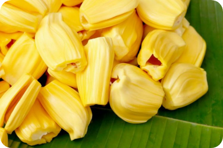

|
Nangka, Buah Pengganti Daging Masa Depan bagi Vegetarian
Dinny Mutiah | 10 November 2021

Siapa menyangka bila nangka bisa jadi pengganti daging? Buah tropis ini sangat volatil, bisa
dimasak, dipotong-potong, hingga diiris untuk dibuat jadi beragam panganan. Tak heran para
vegetarian menjadikannya bahan pengganti daging masa depan.
Meski aslinya berasal dari India, buah dengan bau khas ini juga mudah didapatkan di Asia
Tenggara, Meksiko, Karibia, dan Amerika Selatan. Nangka matang bobotnya bisa mencapai
7--32 kilogram (kg).
Nangka yang dimasak biasanya adalah nangka muda. Sementara, nangka yang matang biasanya digunakan untuk pelengkap makanan penutup.
Nangka bisa dijual sebagai buah utuh atau sudah dikuliti sehingga gampang dimakan. Saat masih mentah, kulit buah tersebut berwarna hijau
dan keras. Semakin matang, kulit nangka lebih lunak, kekuningan dengan beberapa titik cokelat. Baunya pun semakin wangi. Mengutip laman South
China Morning Post, Selasa (4/2/2020), seiring berkembangnya tren pola diet berbasis tanaman sebagai pengganti daging, popularitas nangka ikut meningkat.
Kepala Marketing Melissa's Produce Robert Schueller mengamati tren tersebut selama beberapa tahun terakhir. "Sekitar lima tahun terakhir, buah ini (nangka) mulai
naik daun. Para vegetarian dan vegan menemukan bagaimana buah ini bisa jadi pengganti daging untuk makanan, seperti sandwich daging maupun daging taco," terangnya.
Nangka semakin jadi buah bibir di Amerika Serikat. Tak heran bila toko seperti Melissa juga bisa menjual hanya beberapa paket nangka dalam seminggu berubah jadi ribuan
paket dalam seminggu. Melissa juga menjual nangka kupas dalam kemasan plastik yang hanya berisi sekitar satu atau dua porsi makan.
Menu nangka pun dihadirkan beragam restoran vegan dan vegetarian. Bahkan, beberapa restoran konvensional menawarkan menu berbasis nangka.
Tomatillo, sebuah restoran Meksiko di Dobbs Ferry, New York, menawarkan quesadilla dan taco terbuat dari nangka di dalamnya. Meski begitu, mereka juga masih menjual produk berbahan daging.
Di Chicago, Alulu Brewpub juga menyediakan flat bread nangka khas Sisilia, berdampingan dengan menu berbahan perut babi. Sementara, Angela Means, pemilik kafe vegan
Jackfruit di Los Angeles, menerangkan semakin banyak orang beralih ke diet vegan dipicu beberapa alasan, termasuk isu lingkungan, kesehatan, dan kepedulian atas hak hewan.
"Kita makan daging karena tekstur dan bumbu-bumbunya. Nangka adalah pengganti (daging) terbaik," kata Means.
Ia menerangkan, nangka merupakan pilihan terbaik karena teksturnya mirip daging dan jumlah produksinya juga banyak. Selain itu, kandungan nutrisi di dalamnya kaya akan potasium, serat, dan magnesium.
Means memprediksi popularitas nangka sebagai pengganti daging akan terus menanjak, bahkan hingga 10 tahun ke depan. Kafe yang dikelolanya menyediakan patty ikan terbuat dari nangka dikombinasikan dengan rumput laut.
"Anda tidak akan melewatkan apapun, kami bisa memberi taco dan Anda bahkan tak tahu itu vegan," ujarnya.
|
|